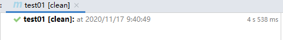
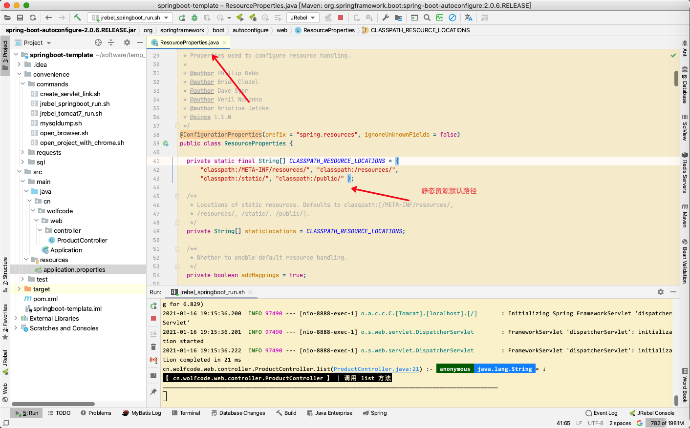

@(工作笔记)
spring-boot-record
[TOC]
Loading class com.mysql.jdbc.Driver'. This is deprecated. The new driver class iscom.mysql.cj.jdbc.Driver'. The driver is automatically registered via the SPI and manual loading of the driver class is generally unnecessary.
加载类“ com.mysql.jdbc.Driver”。 不推荐使用。 新的驱动程序类为“ com.mysql.cj.jdbc.Driver”。 该驱动程序通过SPI自动注册，通常不需要手动加载该驱动程序类。
Communications link failure
com.mysql.cj.jdbc.Driver
mysql driver class 换成 com.mysql.cj.jdbc.Driver 解决了 什么鬼...
springboot命令行启动
方法1:直接启动springboot项目
mvn compile # 编译源码 mvn spring-boot:run # 启动项目
若是没有加环境变量就要是 E:\software\apache-maven-3.3.9\bin\mvn spring-boot:run
解决warning
--add-opens java.base/java.util=ALL-UNNAMED --add-opens java.base/java.lang.reflect=ALL-UNNAMED --add-opens java.base/java.text=ALL-UNNAMED --add-opens java.desktop/java.awt.font=ALL-UNNAMED
mybatis报错：Expected one result (or null) to be returned by selectOne(), but found: 20
https://blog.csdn.net/u010453363/article/details/46621319
解决Maven ‘parent.relativePath‘ of POM
https://blog.csdn.net/BingTaiLi/article/details/109735778
错误分析 子模块的parent写的不是父模块，而是继承了springboot
<parent>
<groupId>org.springframework.boot</groupId>
<artifactId>spring-boot-starter-parent</artifactId>
<version>2.4.0</version>
</parent>
123456
解决方法
在该<parent>标签中加上<relativePath />
即
<parent>
<groupId>org.springframework.boot</groupId>
<artifactId>spring-boot-starter-parent</artifactId>
<version>2.4.0</version>
<relativePath />
</parent>
123456
此时，再次运行该生命周期方法，没有警告提示 

@springBootApplication的默认扫描范围
但@springBootApplication的默认扫描范围只是在启动类（即被@springbootApplication注解的类）所在的包及其子包
Spring Boot 各版本的Java版本要求
| Sping Boot | Spring Framework | Java | Maven | Gradle |
| Spring Boot 2.1.x | ||||
| 2.1.0.RELEASE | Spring Framework 5.1.2.RELEASE | Java 8 or 9 | 3.3+ | 4.4+ |
| Spring Boot 2.0.x | ||||
| 2.0.6.RELEASE | Spring Framework 5.0.10.RELEASE | Java 8 or 9 | 3.2+ | 4.x |
| 2.0.5.RELEASE | Spring Framework 5.0.9.RELEASE | 4.x | ||
| 2.0.4.RELEASE | Spring Framework 5.0.8.RELEASE | 4 | ||
| 2.0.3.RELEASE | Spring Framework 5.0.7.RELEASE | 4 | ||
| 2.0.2.RELEASE | Spring Framework 5.0.6.RELEASE | 4 | ||
| 2.0.1.RELEASE | Spring Framework 5.0.5.RELEASE | 4 | ||
| 2.0.0.RELEASE | Spring Framework 5.0.4.RELEASE | 4 | ||
| Spring Boot 1.5.x | ||||
| 1.5.17.RELEASE | Spring Framework 4.3.20.RELEASE | Java 7 | 3.2+ | [2.9, 3.x] |
| 1.5.16.RELEASE | Spring Framework 4.3.19.RELEASE | |||
| 1.5.15.RELEASE | Spring Framework 4.3.18.RELEASE | |||
| 1.5.14.RELEASE | Spring Framework 4.3.18.RELEASE | |||
| 1.5.13.RELEASE | Spring Framework 4.3.17.RELEASE | |||
| 1.5.12.RELEASE | Spring Framework 4.3.16.RELEASE | |||
| 1.5.11.RELEASE | Spring Framework 4.3.15.RELEASE | |||
| 1.5.10.RELEASE | Spring Framework 4.3.14.RELEASE | |||
| 1.5.9.RELEASE | Spring Framework 4.3.13.RELEASE | |||
| 1.5.8.RELEASE | Spring Framework 4.3.12.RELEASE | |||
| 1.5.7.RELEASE | Spring Framework 4.3.11.RELEASE | |||
| 1.5.6.RELEASE | Spring Framework 4.3.10.RELEASE | |||
| 1.5.5.RELEASE | Spring Framework 4.3.10.RELEASE | |||
| 1.5.4.RELEASE | Spring Framework 4.3.9.RELEASE | |||
| 1.5.3.RELEASE | Spring Framework 4.3.8.RELEASE | |||
| 1.5.2.RELEASE | Spring Framework 4.3.7.RELEASE | |||
| 1.5.1.RELEASE | Spring Framework 4.3.6.RELEASE | |||
| 1.5.0.RELEASE | Spring Framework 4.3.6.RELEASE | |||
| Spring Boot 1.4.x | ||||
| 1.4.7.RELEASE | Spring Framework 4.3.9.RELEASE | Java 7 | 3.2+ |
[1.12, 2.x] |
| 1.4.6.RELEASE | Spring Framework 4.3.8.RELEASE | |||
| 1.4.5.RELEASE | Spring Framework 4.3.7.RELEASE | |||
| 1.4.4.RELEASE | Spring Framework 4.3.6.RELEASE | |||
| 1.4.3.RELEASE | Spring Framework 4.3.5.RELEASE | |||
| 1.4.2.RELEASE | Spring Framework 4.3.4.RELEASE | |||
| 1.4.1.RELEASE | Spring Framework 4.3.3.RELEASE | |||
| 1.4.0.RELEASE | Spring Framework 4.3.2.RELEASE | |||
| Spring Boot 1.3.x | ||||
| 1.3.8.RELEASE | Spring Framework 4.2.8.RELEASE |
Java 7 |
3.2+ |
[1.12, 2.x] |
| 1.3.7.RELEASE | Spring Framework 4.2.7.RELEASE | 1.12+ | ||
| 1.3.6.RELEASE | Spring Framework 4.2.7.RELEASE | |||
| 1.3.5.RELEASE | Spring Framework 4.2.6.RELEASE | |||
| 1.3.4.RELEASE | Spring Framework 4.2.6.RELEASE | |||
| 1.3.3.RELEASE | Spring Framework 4.1.5 or above | |||
| 1.3.2.RELEASE | ||||
| 1.3.1.RELEASE | ||||
| 1.3.0.RELEASE | ||||
| Spring Boot 1.2.x | ||||
| 1.2.8.RELEASE | Spring Framework 4.1.5 or above | Java 7 | 3.2+ | 1.12+ |
| 1.2.7.RELEASE | ||||
| 1.2.6.RELEASE | ||||
| 1.2.5.RELEASE | ||||
| 1.2.4.RELEASE | ||||
| 1.2.3.RELEASE | ||||
| 1.2.2.RELEASE | ||||
| 1.2.1.RELEASE | Spring Framework 4.1.3 or above | Java 6 | ||
| 1.2.0.RELEASE | ||||
11111111
阿里巴巴Java开发手册中的DO、DTO、BO、AO、VO、POJO定义
分层领域模型规约：
- DO（ Data Object）：与数据库表结构一一对应，通过DAO层向上传输数据源对象。
- DTO（ Data Transfer Object）：数据传输对象，Service或Manager向外传输的对象。
- BO（ Business Object）：业务对象。 由Service层输出的封装业务逻辑的对象。
- AO（ Application Object）：应用对象。 在Web层与Service层之间抽象的复用对象模型，极为贴近展示层，复用度不高。
- VO（ View Object）：显示层对象，通常是Web向模板渲染引擎层传输的对象。
- POJO（ Plain Ordinary Java Object）：在本手册中， POJO专指只有setter/getter/toString的简单类，包括DO/DTO/BO/VO等。
- Query：数据查询对象，各层接收上层的查询请求。 注意超过2个参数的查询封装，禁止使用Map类来传输。
领域模型命名规约：
- 数据对象：xxxDO，xxx即为数据表名。
- 数据传输对象：xxxDTO，xxx为业务领域相关的名称。
- 展示对象：xxxVO，xxx一般为网页名称。
- POJO是DO/DTO/BO/VO的统称，禁止命名成xxxPOJO。